<meta charset="utf-8">
<title>아센다 알사시아 — 스타벅스 커피 농장, 투어 없이 카페만 15분 — 나의 투자 그리고 행복한 여행</title>
<meta name="description" content="아센다 알사시아 방문 기록. 방문자 센터와 카페는 예약 없이 08:00~18:00 이용 가능하고, 90분 가이드 투어는 성인 35달러입니다. 투어 없이 15분 동안 본 것을 사진 16장으로 정리했습니다.">
<meta name="viewport" content="width=device-width, initial-scale=1">
<link rel="canonical" href="https://danielmoon82.github.io/moon/posts/alsacia-starbucks-farm-2026-09-12.html">
<link rel="preconnect" href="https://fonts.googleapis.com">
<link rel="preconnect" href="https://fonts.gstatic.com" crossorigin>
<link rel="stylesheet" href="https://fonts.googleapis.com/css2?family=Hahmlet:wght@400;600;800&family=IBM+Plex+Mono:wght@400;500&family=IBM+Plex+Sans+KR:wght@300;400;500;600&display=swap">

<style>
  :root{
    --paper:#F2EEE6;--surface:#FAF8F3;--surface-2:#E7E1D5;
    --ink:#191510;--ink-2:#4A4235;--ink-3:#7D7364;
    --line:#D6CEBF;--line-soft:#E4DDD0;--accent:#B06A15;--accent-bright:#C2761A;
    --up:#E5484D;--down:#3B82F6;
    --f-display:"Hahmlet",'Nanum Myeongjo',"Apple SD Gothic Neo",serif;
    --f-body:"IBM Plex Sans KR","Apple SD Gothic Neo","Malgun Gothic",sans-serif;
    --f-mono:"IBM Plex Mono","SFMono-Regular",Consolas,monospace;
    --pad:clamp(20px,5vw,64px);
  }
  @media (prefers-color-scheme:dark){
    :root:not([data-theme="light"]){
      --paper:#0B1120;--surface:#121A2C;--surface-2:#1A2439;
      --ink:#E9EEF7;--ink-2:#A9B5C9;--ink-3:#72809A;
      --line:#26314A;--line-soft:#1D2739;--accent:#E8A33D;--accent-bright:#F0B45C;
    }
  }
  *{box-sizing:border-box;}
  body{margin:0;background:var(--paper);color:var(--ink);font-family:var(--f-body);
    font-weight:300;font-size:1rem;line-height:1.75;-webkit-font-smoothing:antialiased;}
  a{color:inherit;}
  img{max-width:100%;height:auto;}
  .wrap{max-width:760px;margin:0 auto;padding-inline:var(--pad);}
  .nav{position:sticky;top:0;z-index:20;background:color-mix(in srgb,var(--paper) 88%,transparent);
    backdrop-filter:saturate(180%) blur(12px);border-bottom:1px solid var(--line);}
  .nav-in{display:flex;align-items:center;justify-content:space-between;height:58px;}
  .brand{font-family:var(--f-display);font-weight:600;font-size:1rem;letter-spacing:-.02em;text-decoration:none;}
  .back{font-family:var(--f-mono);font-size:.72rem;color:var(--ink-3);text-decoration:none;}
  .article{padding-block:clamp(40px,7vw,72px) clamp(56px,9vw,96px);}
  .eyebrow{font-family:var(--f-mono);font-size:.68rem;letter-spacing:.16em;text-transform:uppercase;
    color:var(--accent);margin:0 0 14px;}
  h1{font-family:var(--f-display);font-weight:800;font-size:clamp(1.6rem,4.4vw,2.3rem);
    line-height:1.3;letter-spacing:-.03em;margin:0 0 16px;}
  .byline{font-family:var(--f-mono);font-size:.72rem;color:var(--ink-3);
    padding-bottom:24px;border-bottom:1px solid var(--line);margin-bottom:32px;}
  h2{font-family:var(--f-display);font-weight:600;font-size:1.25rem;letter-spacing:-.02em;margin:42px 0 14px;}
  h3{font-family:var(--f-display);font-weight:600;font-size:1.05rem;letter-spacing:-.02em;
    margin:30px 0 10px;padding-top:14px;border-top:1px solid var(--line-soft);}
  h3 .code{font-family:var(--f-mono);font-size:.7rem;font-weight:400;color:var(--ink-3);margin-left:6px;}
  p{margin:0 0 18px;color:var(--ink-2);}
  ul.checks{margin:0 0 18px;padding-left:20px;color:var(--ink-2);}
  ul.checks li{margin-bottom:8px;font-size:.94rem;}
  table{width:100%;border-collapse:collapse;font-size:.88rem;margin-bottom:8px;}
  th{font-family:var(--f-mono);font-size:.66rem;letter-spacing:.06em;text-transform:uppercase;
    color:var(--ink-3);text-align:right;padding:8px 6px;border-bottom:1px solid var(--line);}
  th:first-child{text-align:left;}
  td{padding:10px 6px;border-bottom:1px solid var(--line-soft);color:var(--ink-2);}
  td.num{font-family:var(--f-mono);text-align:right;font-variant-numeric:tabular-nums;}
  td.up{color:var(--up);} td.down{color:var(--down);}
  .scroll{overflow-x:auto;}
  figure{margin:22px 0;}
  figure img{display:block;border-radius:3px;background:var(--surface-2);}
  figcaption{margin-top:8px;font-family:var(--f-mono);font-size:.68rem;color:var(--ink-3);text-align:center;}
  .note{margin-top:34px;padding:16px 18px;border-left:3px solid var(--accent);
    background:var(--surface);border-radius:0 3px 3px 0;}
  .note p{margin:0;font-size:.85rem;color:var(--ink-3);}
  .foot{border-top:1px solid var(--line);background:var(--surface);padding-block:30px 38px;}
  .foot p{margin:0;font-size:.8rem;color:var(--ink-3);}
</style>

<nav class="nav">
  <div class="wrap nav-in">
    <a class="brand" href="../index.html">나의 투자 그리고 행복한 여행</a>
    <a class="back" href="../index.html#stocks">← 시황으로</a>
  </div>
</nav>

<main class="wrap article">
  <p class="eyebrow">Market</p>
  <h1>아센다 알사시아 방문 기록 — 투어 없이 카페만, 15분</h1>
  <p class="byline">여행 · 2026-09-12 기준</p>

  <p>한 줄 요약: 2026년 6월 30일 14:56~15:11, 스타벅스 커피 농장 아센다 알사시아의 방문자 센터와 카페만 둘러본 기록입니다.</p>
  <p>사진 16장의 EXIF 촬영 시각과 GPS·고도값을 근거로 정리했습니다. 체류 시간은 15분 21초, 고도는 1,425~1,456m로 기록돼 있습니다.</p>
  <p>가이드 투어는 하지 않았습니다. 투어에서만 볼 수 있는 것과 카페에서도 볼 수 있는 것을 구분했습니다.</p>
  <p>운영시간·요금은 2026년 9월 기준으로 따로 확인해 붙였습니다.</p>
  <h2>스타벅스가 소유한 유일한 농장</h2>
  <figure>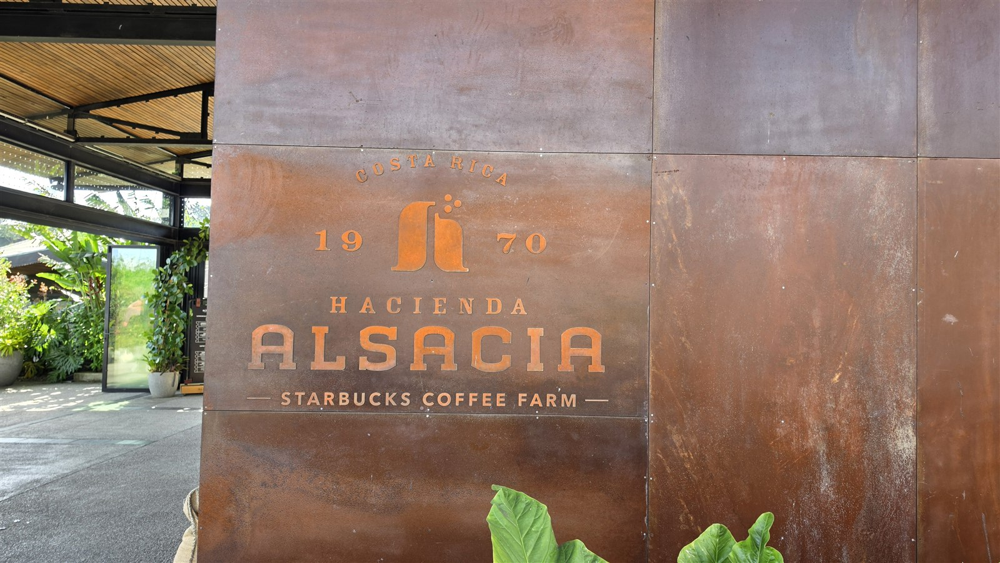<figcaption>입구의 코르텐강 사인. COSTA RICA 1970, HACIENDA ALSACIA, STARBUCKS COFFEE FARM이라고 적혀 있습니다</figcaption></figure>
  <p>아센다 알사시아는 코스타리카 알라후엘라주, 포아스 화산 비탈에 있습니다. 산호세에서 차로 1시간이 안 걸립니다.</p>
  <p>스타벅스가 2013년에 인수해 농장 겸 연구 시설로 운영하고 있습니다. 여기서 개발한 품종과 재배법을 중남미 농가에 공유하는 것이 목적이라고 밝히고 있습니다.</p>
  <p>입구 사인에 적힌 1970은 농장이 처음 만들어진 해입니다.</p>
  <h2>예약 없이 들어갈 수 있나 — 결론부터</h2>
  <p>**방문자 센터와 카페는 예약이 필요 없습니다.** 매일 08:00부터 18:00까지 엽니다.</p>
  <p>예약이 필요한 것은 가이드 투어입니다. 이건 별도로 표를 사야 합니다.</p>
  <ul class="checks">
    <li>방문자 센터·카페 — 예약 불필요, 매일 08:00~18:00, 입장 자체는 무료</li>
    <li>가이드 커피 투어 — 90분, 매일 08:00~16:00, 사전 예약</li>
    <li>커피 랩 프로그램 — 45분 과정이 따로 있습니다</li>
  </ul>
  <p>투어 요금은 2026년 9월 기준으로 외국인 성인 35달러, 시니어·학생 30달러입니다. 코스타리카 국민과 거주자는 25달러, 20달러이고 6세 이하는 무료입니다.</p>
  <div class="note"><p>즉 시간이 없으면 카페만 들러도 됩니다. 이 글은 그렇게 15분 있었던 기록입니다.</p></div>
  <h2>들어가면 먼저 보이는 것</h2>
  <figure>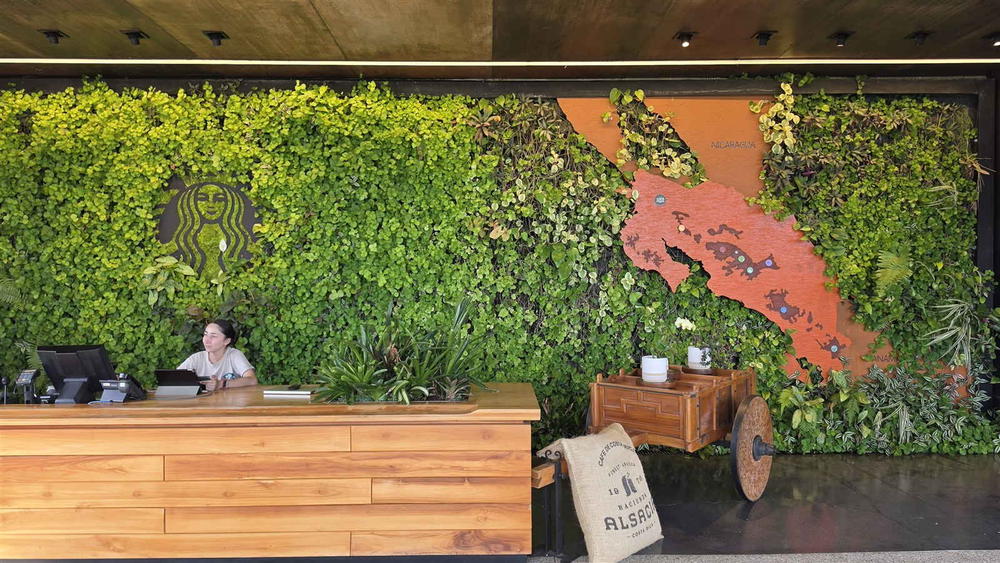<figcaption>리셉션. 벽 전체가 살아 있는 식물이고 왼쪽에 스타벅스 세이렌, 오른쪽에 코스타리카 지도가 붙어 있습니다</figcaption></figure>
  <p>주차장에서 들어오면 리셉션이 나옵니다. 투어 표를 확인하는 곳이지만, 카페만 이용할 거라면 그냥 지나가면 됩니다.</p>
  <p>벽이 통째로 식물입니다. 그 안에 스타벅스 로고와 코스타리카 지도가 들어가 있고, 지도에는 커피 산지가 표시돼 있습니다.</p>
  <p>오른쪽 아래 마대는 실제 생두 자루입니다.</p>
  <h2>카페 — 여기가 사실상 목적지</h2>
  <figure>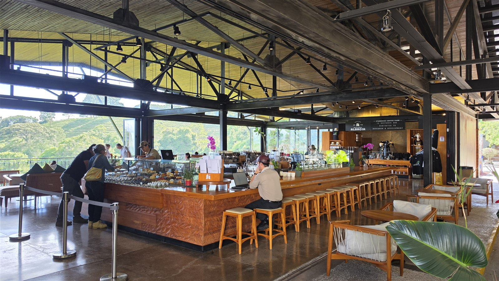<figcaption>카페 전경. 한쪽 벽이 전부 열려 있고 그 너머가 커피밭입니다</figcaption></figure>
  <figure>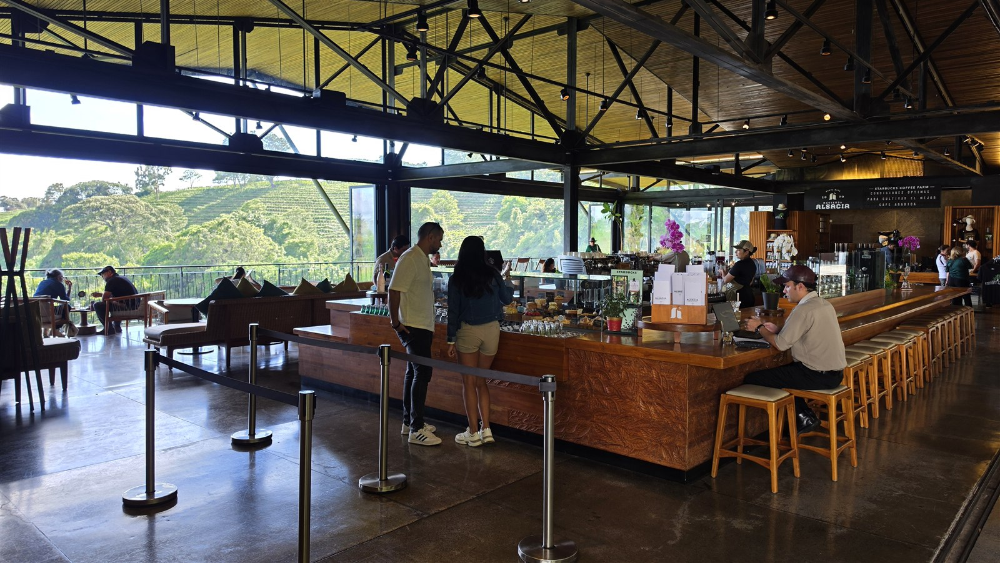<figcaption>같은 공간을 반대쪽에서. 오후 3시인데도 주문 줄이 있었습니다</figcaption></figure>
  <p>건물 한쪽 면이 통째로 열려 있습니다. 유리창이 아니라 벽이 없습니다.</p>
  <p>그래서 앉은 자리에서 바로 커피밭이 보입니다. 이게 이 카페의 전부라고 해도 될 정도입니다.</p>
  <p>메뉴는 일반 스타벅스 메뉴에 더해 이 농장에서만 파는 음료가 있습니다. 맥주와 와인, 커피에 술을 넣은 음료도 있습니다.</p>
  <p>오후 3시쯤 갔는데 자리는 있었지만 주문 줄은 계속 있었습니다.</p>
  <h2>사이폰과 로스터가 카페 안에 있습니다</h2>
  <figure>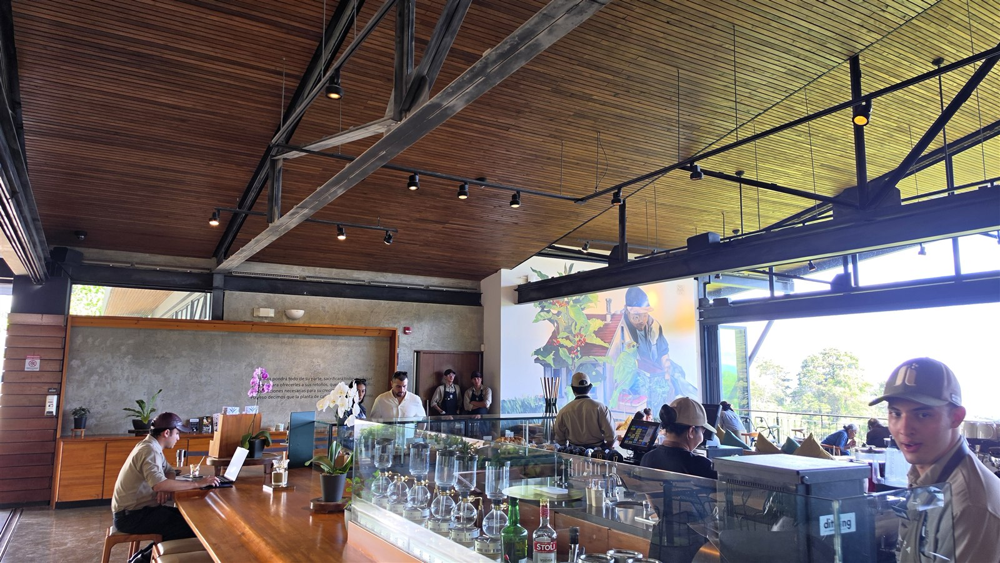<figcaption>바 위에 사이폰이 줄지어 있습니다</figcaption></figure>
  <figure>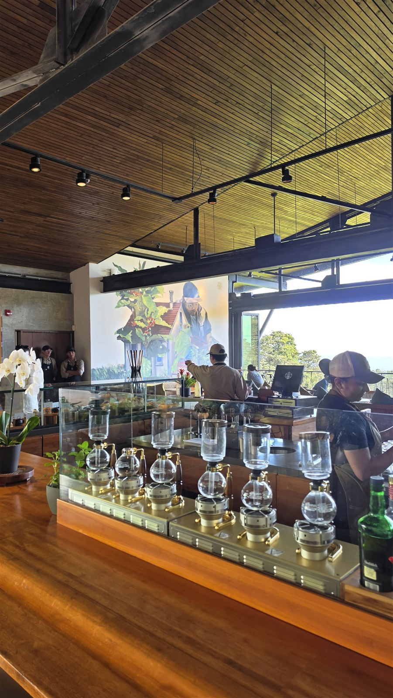<figcaption>사이폰 클로즈업. 뒤쪽 벽화는 커피 따는 농부를 그린 것입니다</figcaption></figure>
  <figure>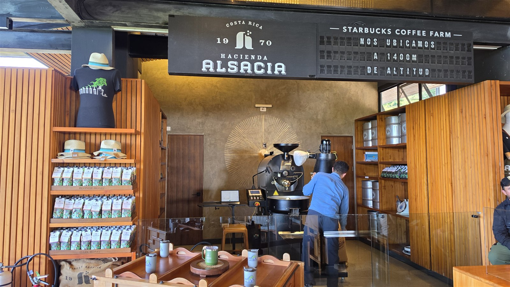<figcaption>카페 안쪽 로스터. 위 안내판에 NOS UBICAMOS A 1400M DE ALTITUD, 고도 1400m에 있다고 적혀 있습니다</figcaption></figure>
  <p>바 위에 사이폰이 늘어서 있습니다. 주문하면 그 자리에서 내려줍니다.</p>
  <p>안쪽에는 로스터가 있고, 직원이 실제로 돌리고 있었습니다. **투어를 안 해도 로스팅 기계는 카페에서 볼 수 있습니다.**</p>
  <p>로스터 위 안내판의 1400m는 EXIF 고도 기록과 맞습니다. 사진에 남은 값이 1,425~1,456m였습니다.</p>
  <h2>원두와 굿즈 — 여기서만 파는 것</h2>
  <figure>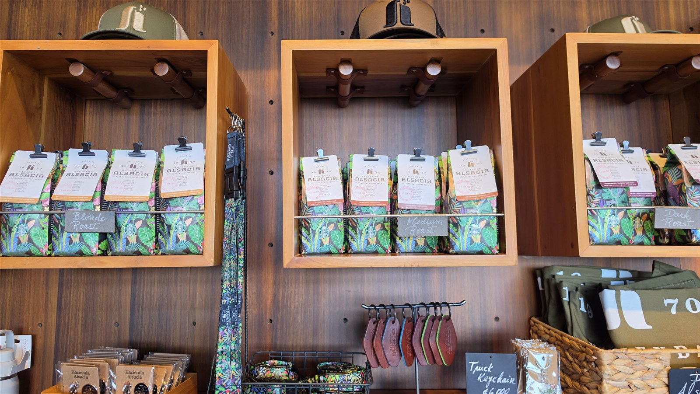<figcaption>원두 진열대. Blonde, Medium, Dark 세 종류로 나뉘어 있습니다</figcaption></figure>
  <p>아센다 알사시아 이름이 붙은 원두를 팝니다. 열대 식물 무늬 포장은 이곳 전용입니다.</p>
  <p>로스팅 정도별로 블론드, 미디엄, 다크로 나뉘어 있습니다.</p>
  <p>원두 외에 모자, 티셔츠, 텀블러, 키체인 같은 굿즈가 있습니다. 농장 로고가 들어간 물건은 다른 매장에서 구하기 어렵습니다.</p>
  <p>선물용으로 사는 사람이 많아 보였습니다.</p>
  <h2>건물 밖 — 걸어 다니며 볼 수 있는 것</h2>
  <figure>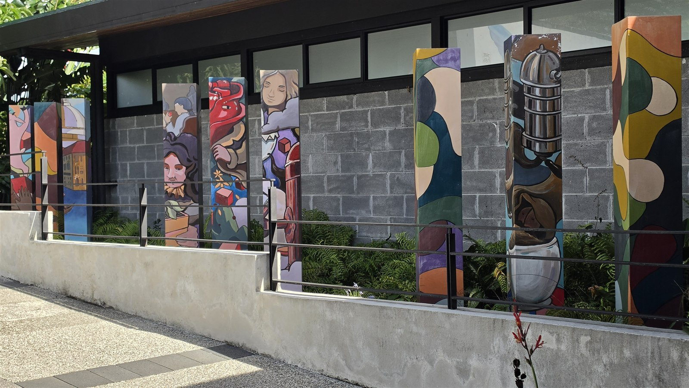<figcaption>지역 예술가들이 그린 기둥 작품이 줄지어 서 있습니다</figcaption></figure>
  <figure>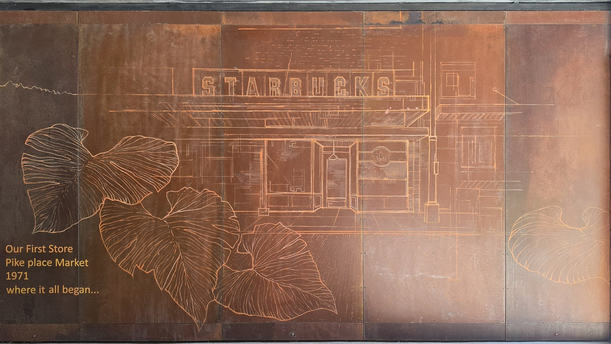<figcaption>1971년 파이크플레이스 1호점을 코르텐강에 새긴 벽. where it all began이라고 적혀 있습니다</figcaption></figure>
  <figure>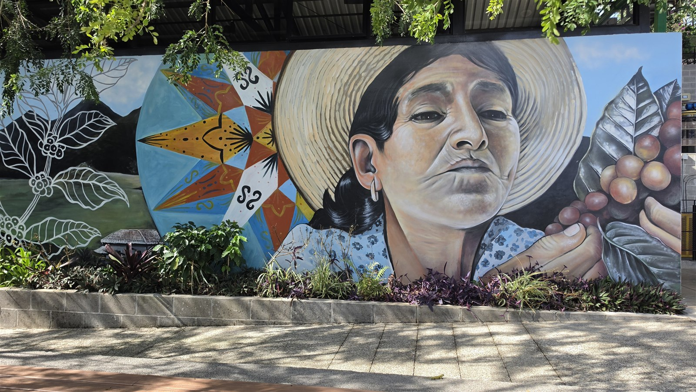<figcaption>커피를 수확하는 여성을 그린 벽화. 옆에는 코스타리카 전통 우마차 무늬가 들어가 있습니다</figcaption></figure>
  <p>카페 건물 주변 통로를 따라 작품이 배치돼 있습니다. 투어 표가 없어도 다 볼 수 있습니다.</p>
  <p>코르텐강 벽에는 1971년 시애틀 파이크플레이스 1호점 도면이 선으로 새겨져 있습니다.</p>
  <p>벽화는 커피 수확과 코스타리카 전통을 소재로 삼고 있습니다. 사진 찍는 사람이 가장 많았던 자리입니다.</p>
  <h2>가공 설비와 사일로</h2>
  <figure>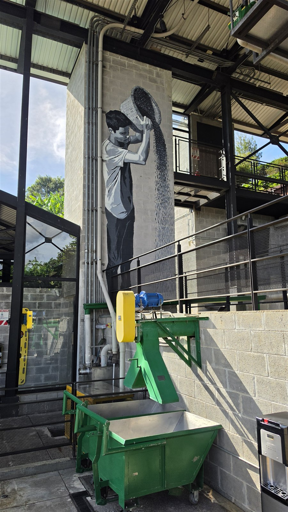<figcaption>야외 가공 설비. 뒤 기둥에 생두를 쏟는 인부 그림이 그려져 있습니다</figcaption></figure>
  <figure>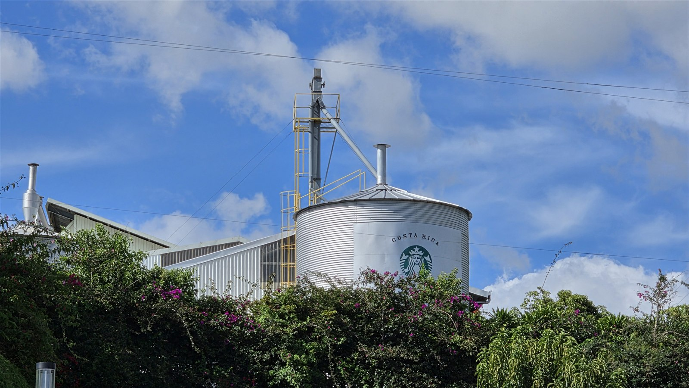<figcaption>스타벅스 로고가 붙은 사일로. COSTA RICA라고 적혀 있습니다</figcaption></figure>
  <p>카페에서 나오면 실제 가공 설비가 보입니다. 관람용이 아니라 쓰고 있는 장비입니다.</p>
  <p>언덕 위로는 사일로가 보입니다. 스타벅스 로고에 COSTA RICA가 붙은 건 여기서만 볼 수 있습니다.</p>
  <p>다만 설비 안쪽으로 들어가거나 가까이서 설명을 듣는 건 투어를 해야 합니다. 카페 쪽에서는 바깥에서 보는 정도입니다.</p>
  <h2>전망 — 사실 이걸 보러 갑니다</h2>
  <figure>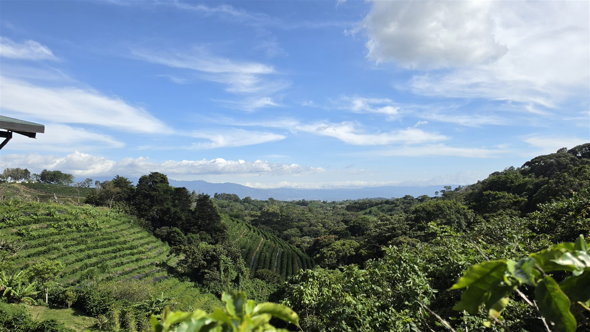<figcaption>카페 옆 전망대에서 본 농장. 왼쪽 비탈이 전부 커피밭이고 멀리 중앙 계곡이 보입니다</figcaption></figure>
  <figure>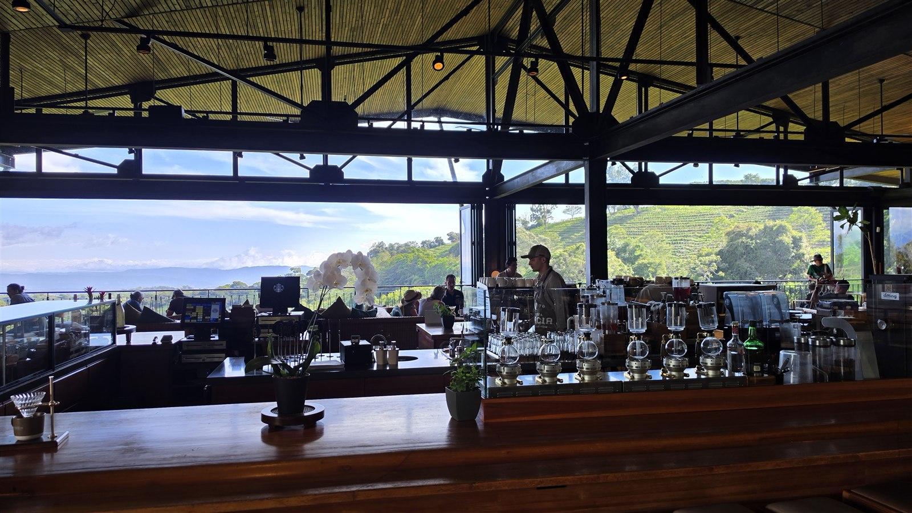<figcaption>카페 안에서 바깥쪽으로. 오후 햇빛이 들어오면 이렇게 보입니다</figcaption></figure>
  <p>커피나무가 등고선을 따라 심겨 있어서 비탈에 줄무늬가 생깁니다.</p>
  <p>맑으면 멀리 중앙 계곡까지 보입니다. 6월은 우기라 오후에 구름이 끼는 날이 많은데, 이날은 3시까지 맑았습니다.</p>
  <p>전망대는 카페 바로 옆이라 음료를 들고 나가서 볼 수 있습니다.</p>
  <h2>15분으로 충분한가 — 본 것과 못 본 것</h2>
  <p>사진에 남은 시각으로 보면 실제 체류 시간은 **15분 21초**였습니다. 그 안에 본 것을 정리하면 이렇습니다.</p>
  <p>카페만 들러도 볼 수 있는 것입니다.</p>
  <ul class="checks">
    <li>카페와 전망대 — 커피밭이 바로 보입니다</li>
    <li>로스터 — 카페 안에 있어 돌아가는 걸 볼 수 있습니다</li>
    <li>사이폰 추출 — 바에서 바로 내려줍니다</li>
    <li>농장 전용 원두와 굿즈</li>
    <li>야외 작품과 벽화, 파이크플레이스 1호점 벽</li>
    <li>가공 설비와 사일로 — 바깥에서 보는 정도</li>
  </ul>
  <p>투어를 해야 볼 수 있는 것입니다. 아래는 직접 보지 못했고, 공개된 투어 안내에 적힌 내용입니다.</p>
  <ul class="checks">
    <li>묘목장 — 품종 개량과 육묘 과정</li>
    <li>습식 가공장 내부 — 열매에서 생두를 분리하는 공정</li>
    <li>건조장 — 생두를 말리는 파티오</li>
    <li>가이드 설명과 시음 프로그램</li>
  </ul>
  <div class="note"><p>정리하면 15분은 '카페와 풍경'까지입니다. 커피가 만들어지는 과정을 보려면 90분 투어를 따로 잡아야 합니다.</p></div>
  <p>포아스 화산을 가는 길에 잠깐 들르는 거라면 30분 정도로 충분합니다. 커피 자체에 관심이 있다면 투어를 예약하는 편이 낫습니다.</p>
  <h2>가는 방법</h2>
  <figure>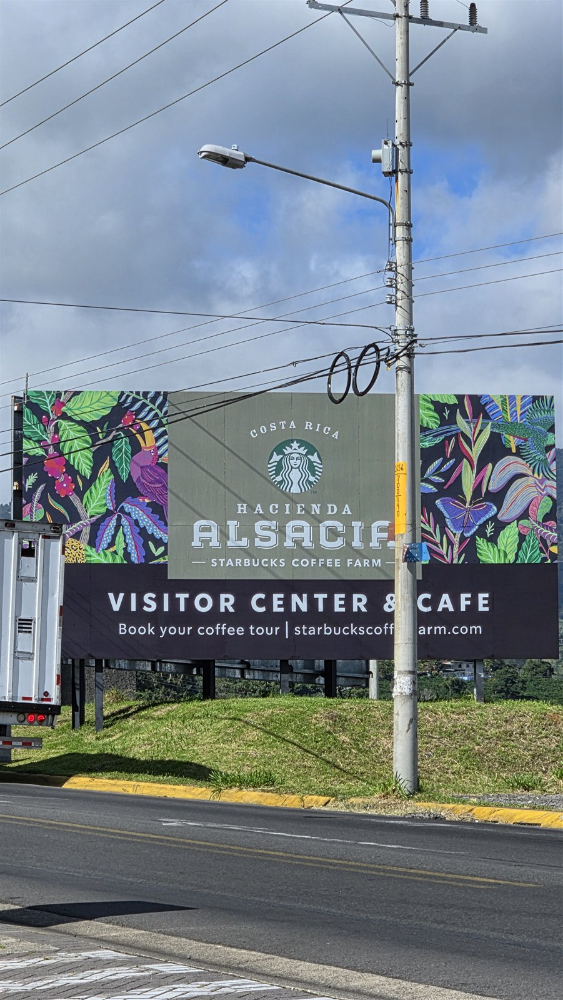<figcaption>큰길가 광고판. VISITOR CENTER &amp; CAFE라고 적혀 있어 지나가다 찾기 쉽습니다</figcaption></figure>
  <p>포아스 화산 국립공원으로 올라가는 길목에 있습니다. 큰길에 이 광고판이 서 있어 눈에 띕니다.</p>
  <ul class="checks">
    <li>산호세에서 차로 1시간 이내</li>
    <li>산호세 국제공항(알라후엘라)에서 더 가깝습니다</li>
    <li>포아스 화산에 다녀오는 길에 붙이기 좋은 위치입니다</li>
    <li>주차장이 있습니다</li>
  </ul>
  <p>대중교통으로 바로 가는 노선은 확인되지 않았습니다. 렌터카나 택시, 또는 포아스 화산 투어에 포함된 일정으로 가는 경우가 많습니다.</p>
  <p>산호세에서 포아스 화산까지는 대중교통으로 2시간 반 정도 걸리는 것으로 나옵니다. 시간을 아끼려면 차를 쓰는 쪽이 확실합니다.</p>
  <h2>6월에 간다면</h2>
  <ul class="checks">
    <li>6월은 우기입니다. 산호세 기준 낮 25~27도, 밤 16~18도입니다</li>
    <li>오후에 소나기가 오는 경우가 많아 오전 방문이 안전합니다</li>
    <li>고도 1,400m라 시내보다 서늘합니다. 얇은 겉옷이 있으면 좋습니다</li>
    <li>우기 초입은 관광객이 적고 풍경이 가장 푸릅니다</li>
    <li>얇은 우비나 방수 재킷을 챙기는 편이 낫습니다</li>
  </ul>
  <p>이날은 오후 3시까지 맑았습니다. 사진 하늘을 보면 구름이 들어오기 시작하는 게 보입니다.</p>
  <h2>이런 분께 맞습니다</h2>
  <p>맞는 경우입니다.</p>
  <ul class="checks">
    <li>포아스 화산 일정이 있어 오가는 길에 들를 수 있는 경우</li>
    <li>커피를 좋아해서 산지에서 마셔보고 싶은 경우</li>
    <li>여기서만 파는 원두나 굿즈를 사고 싶은 경우</li>
    <li>산호세 공항 가는 길에 시간이 애매하게 남은 경우</li>
  </ul>
  <p>안 맞는 경우입니다.</p>
  <ul class="checks">
    <li>커피 가공 과정을 제대로 보고 싶은 경우 — 투어를 예약해야 합니다</li>
    <li>이곳만 보려고 산호세에서 왕복하는 경우 — 이동 시간이 체류 시간보다 깁니다</li>
    <li>일반 스타벅스 메뉴만 마실 계획인 경우 — 시내 매장과 큰 차이가 없습니다</li>
  </ul>
  <h2>자주 묻는 질문</h2>
  <p>**예약 없이 가도 되나요?**</p>
  <p>방문자 센터와 카페는 예약이 필요 없습니다. 매일 08:00~18:00입니다. 가이드 투어만 예약이 필요합니다.</p>
  <p>**투어를 안 하면 뭘 볼 수 있나요?**</p>
  <p>카페, 전망대, 로스터, 야외 작품과 벽화, 원두·굿즈 매장까지 볼 수 있습니다. 묘목장과 가공장 내부, 건조장은 투어에 포함됩니다.</p>
  <p>**투어는 얼마인가요?**</p>
  <p>2026년 9월 기준 외국인 성인 35달러, 시니어·학생 30달러입니다. 코스타리카 국민·거주자는 25달러, 20달러이고 6세 이하는 무료입니다. 90분 과정이며 08:00~16:00에 운영합니다.</p>
  <p>**얼마나 머물러야 하나요?**</p>
  <p>카페와 전망만 보면 30분이면 됩니다. 이 기록은 15분이었고 카페와 야외를 둘러보는 데까지였습니다. 투어를 하면 90분이 더 필요합니다.</p>
  <p>**여기서만 살 수 있는 게 있나요?**</p>
  <p>아센다 알사시아 이름이 붙은 원두와 농장 로고 굿즈가 있습니다. 다른 매장에서는 구하기 어렵습니다.</p>
  <h2>정리하면</h2>
  <p>스타벅스가 직접 가진 유일한 농장이라는 점이 이곳의 전부는 아닙니다.</p>
  <p>실제로 가보면 고도 1,400m에서 커피밭을 보며 커피를 마시는 자리에 가깝습니다. 그게 목적이라면 15분도 됩니다.</p>
  <p>커피가 어떻게 만들어지는지를 보러 가는 거라면 이야기가 다릅니다. 그건 90분 투어를 따로 잡아야 합니다.</p>
  <p>포아스 화산 일정에 30분만 붙이면 되는 위치라, 지나는 길이면 들러볼 만합니다.</p>
  <p style="font-size:12px;color:#999;line-height:1.6;margin-top:36px">사진은 2026년 6월 30일 직접 촬영한 것이며, 체류 시간과 고도는 사진의 촬영 정보를 그대로 옮긴 것입니다. 가이드 투어는 하지 않았고, 투어 구성과 요금은 2026년 9월에 확인한 공개 정보입니다. 운영시간과 요금은 달라질 수 있으니 방문 전 공식 홈페이지에서 다시 확인하시기 바랍니다.</p>
</main>

<footer class="foot">
  <div class="wrap"><p>나의 투자 그리고 행복한 여행 · 투자 판단의 참고 자료일 뿐, 매수·매도를 권유하지 않습니다.</p></div>
</footer>
